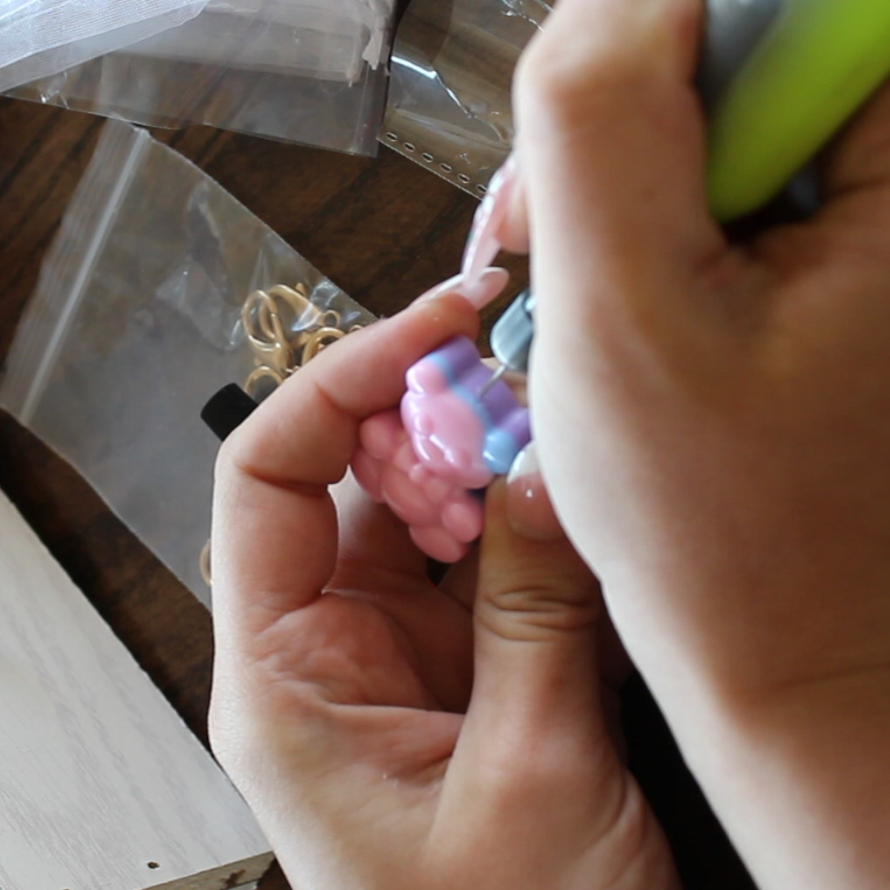
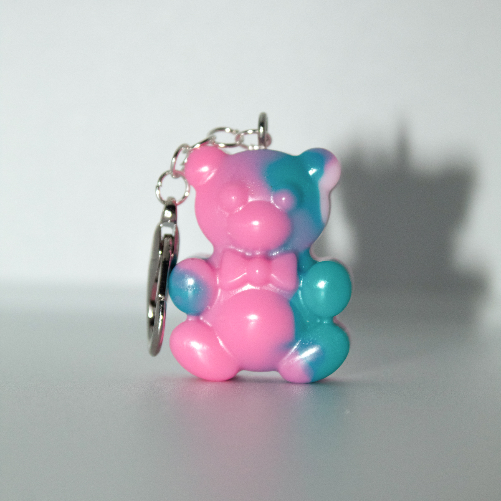
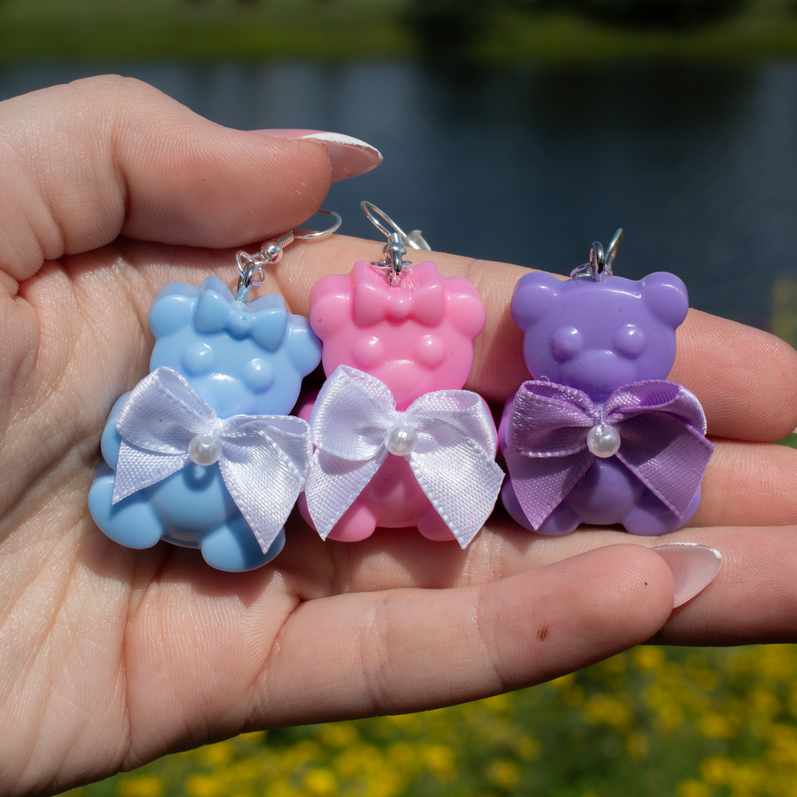

About the Owner
I wanted to start a handmade jewelry business, but first needed to identify design opportunities and gaps in the current market. I knew I wanted a nature-inspired theme, but needed to determine which materials would be both beginner-friendly and cost-effective. I also needed to balance production cost and quality so customers could receive well-crafted products at an accessible price point.
About the Products



To differentiate the brand while maintaining the nature theme, I explored animal-plant hybrid charms. I began by sketching concepts and sculpting original prototypes in clay. I then created silicone molds to cast resin copies. The charms received positive feedback, but the hand-painting process proved time-consuming, and the sealant I used did not fully prevent paint chipping. Because production efficiency was a key goal, I explored pre-made silicone molds from both online and local hobby suppliers.
Contact Me
Email: